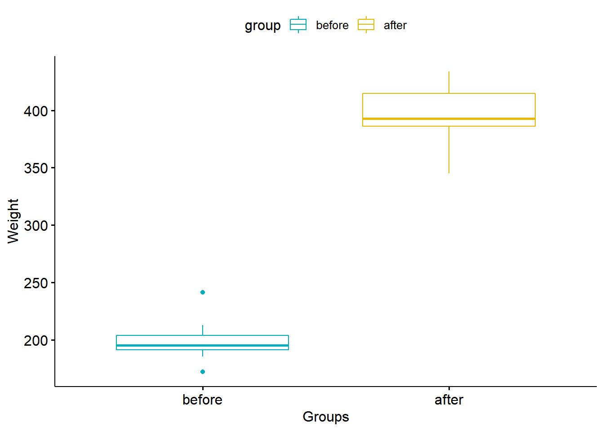
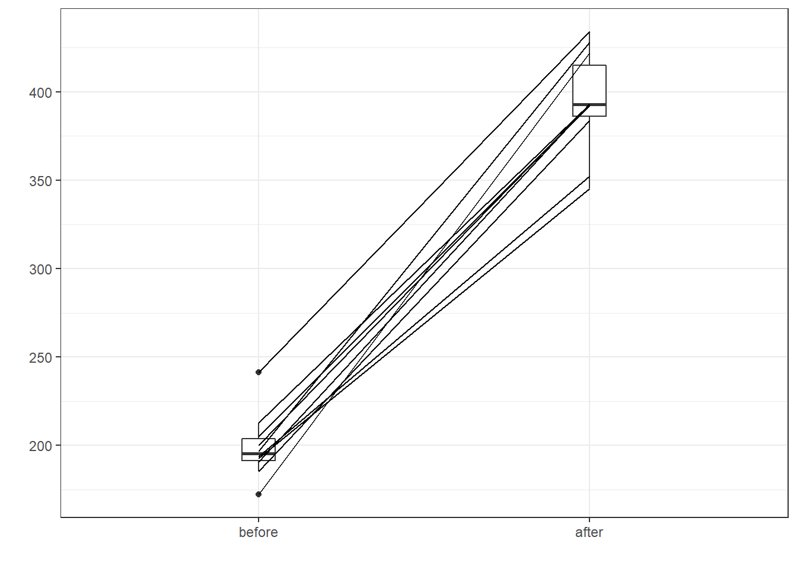

Chapter 5 Paired samples T-test
5.1 데이터 만들기
before <-c(200.1, 190.9, 192.7, 213, 241.4, 196.9, 172.2, 185.5, 205.2, 193.7)
after <-c(392.9, 393.2, 345.1, 393, 434, 427.9, 422, 383.9, 392.3, 352.2)
( my.data <- data.frame(group = rep(c("before", "after"), each = 10), weight = c(before, after) ) )## group weight
## 1 before 200.1
## 2 before 190.9
## 3 before 192.7
## 4 before 213.0
## 5 before 241.4
## 6 before 196.9
## 7 before 172.2
## 8 before 185.5
## 9 before 205.2
## 10 before 193.7
## 11 after 392.9
## 12 after 393.2
## 13 after 345.1
## 14 after 393.0
## 15 after 434.0
## 16 after 427.9
## 17 after 422.0
## 18 after 383.9
## 19 after 392.3
## 20 after 352.2각각 10개씩 전(before), 후(after)에 대한 weight를 담은 데이터셋을 만든다.
5.2 Paired samples T-test란
대응표본(1:1 비교가능한 그룹or군)에 대한 평균차이가 있는지 검정하는 방법이다.
예시)
귀무가설: 강남구에 사는 사람의 2009년 소득은 2010년의 소득과 같다.
대립가설: 강남구에 사는 사람의 2009년 소득은 2010년의 소득과 다르다.
5.3 시각화로 확인하기
library("ggpubr")## Loading required package: ggplot2ggboxplot(my.data,
x = "group",
y = "weight",
color = "group",
palette = c("#00AFBB", "#E7B800"),
order = c("before", "after"),
ylab = "Weight",
xlab = "Groups")
before after 나누기
before <- subset(my.data, group == "before", weight, drop = TRUE)after <- subset(my.data, group == "after", weight, drop = TRUE)5.3.1 플롯 비교 함수
library(PairedData)## Loading required package: MASS## Loading required package: gld## Loading required package: mvtnorm## Loading required package: lattice##
## Attaching package: 'PairedData'## The following object is masked from 'package:base':
##
## summarypd <- paired(before, after)
plot(pd, type = "profile") + theme_bw()
plot 함수로 봐도 충분히 차이가 있다는 것을 확인할 수 있다.
5.4 모수적 방법
모수적인 방법을 사용하기 위해서는 두 가지 전제 조건이 필요하다.
즉, 모집단이 정규성과 등분산성을 따르는지 확인해야 한다. 정규성 검정
shapiro.test(my.data$weight[my.data$group=="before"])##
## Shapiro-Wilk normality test
##
## data: my.data$weight[my.data$group == "before"]
## W = 0.90938, p-value = 0.2768shapiro.test(my.data$weight[my.data$group=="after"])##
## Shapiro-Wilk normality test
##
## data: my.data$weight[my.data$group == "after"]
## W = 0.91121, p-value = 0.2894둘 다 p-value값이 유의수준(0.05)보다 크기 때문에 귀무가설 채택.
따라서 정규성을 따른다.
5.5 등분산성 검정
var.test(weight~group, data = my.data)##
## F test to compare two variances
##
## data: weight by group
## F = 2.5324, num df = 9, denom df = 9, p-value = 0.1825
## alternative hypothesis: true ratio of variances is not equal to 1
## 95 percent confidence interval:
## 0.6290172 10.1955065
## sample estimates:
## ratio of variances
## 2.53242p-value값이 유의수준(0.05)보다 크기 때문에 귀무가설 채택.
따라서 등분산성을 따른다.
두 전제조건 모두 만족한다.
5.6 t.test
( res <- t.test(weight ~ group, data = my.data, paired = TRUE) )##
## Paired t-test
##
## data: weight by group
## t = 20.883, df = 9, p-value = 6.2e-09
## alternative hypothesis: true difference in means is not equal to 0
## 95 percent confidence interval:
## 173.4219 215.5581
## sample estimates:
## mean of the differences
## 194.49p-value값이 유의수준(0.05)보다 아주 작기 때문에 귀무가설 기각. 대립가설 채택.
따라서, before, after의 weight 차이가 있다.
추가 옵션
table(my.data$group)
t.test(weight ~ group, data = my.data, paired = TRUE, alternative = “less”)
t.test(weight ~ group, data = my.data, paired = TRUE, alternative = “greater”)
alternative를 사용하여 대립가설을 조정할 수 있다.
여기서는 table함수를 통해 어떤 그룹이 먼저 들어갔는지 확인한다. after가 먼저다. 가설에서 순서가 정해지기 때문이다.
less인 경우, after의 weihgt가 before weihgt보다 작다.(대립가설) 귀무가설 채택이기 때문에 대립가설이 거짓이다.
greater인 경우, after의 weihgt가 before weihgt보다 크다.(대립가설) 대립가설 채택이기 때문에 대립가설이 참이다.
5.7 평균 추정 값과 신뢰구간
res$estimate## mean of the differences
## 194.49res$conf.int## [1] 173.4219 215.5581
## attr(,"conf.level")
## [1] 0.95after의 weihgt와 before weihgt의 차이 값은 194.49이다.
before, after의 weight 차이 값이 173.4219~215.5581 사이가 신뢰구간 0.95이내 이다.
5.8 비모수적 방법
소표본이고 정규성을 따르지 않을 때 사용하는 방법이다.
my.data는 전제조건을 통과하여 모수적 방법을 사용해야 하지만 연습으로 그냥 한다. ### wilcox.test(윌콕슨 검정)
wilcox.test(weight ~ group, data = my.data, paired = TRUE)##
## Wilcoxon signed rank exact test
##
## data: weight by group
## V = 55, p-value = 0.001953
## alternative hypothesis: true location shift is not equal to 0p-value값이 유의수준(0.05)보다 작기 때문에 귀무가설 기각. 대립가설 채택.
따라서, before, after의 weight 차이가 있다.
5.9 추가 옵션
table(my.data$group)##
## after before
## 10 10wilcox.test(weight ~ group, data = my.data, paired = TRUE, alternative = "less")##
## Wilcoxon signed rank exact test
##
## data: weight by group
## V = 55, p-value = 1
## alternative hypothesis: true location shift is less than 0wilcox.test(weight ~ group, data = my.data, paired = TRUE, alternative = "greater")##
## Wilcoxon signed rank exact test
##
## data: weight by group
## V = 55, p-value = 0.0009766
## alternative hypothesis: true location shift is greater than 0모수적 방법과 똑같이 해석하면 된다.